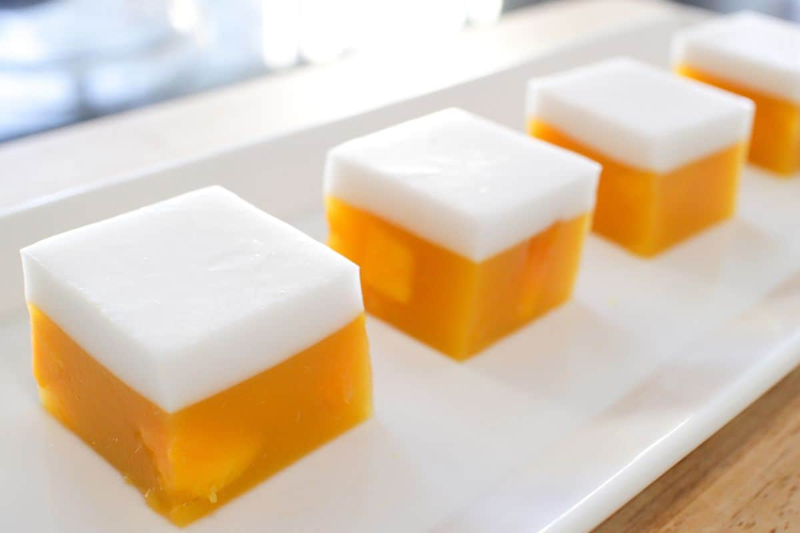

Mango Coconut Jelly
(วุ้นมะม่วง)
This refreshing treat is as delicious as it is beautiful; not to mention easy. It's also a great party dessert as it's vegan and gluten-free. If you want something more exciting than ice cream, this is the perfect warm weather dessert that won't melt!
Ingredient:
Mango Layer
1. 250 g mango flesh (for purée), roughly cubed (from about 1 ½ - 2 mangos, scant 2 cups)
2. Flesh of 1 mango, 1-cm cubes
3. ½ cup orange juice
4. 1 ¼ cups water
5. 2 tsp (5.2 g) agar agar powder
6. ⅓ cup sugar
7. Lime juice, to taste
Coconut Layer
1. ⅔ cup water
2. 1 tsp (2.6 g) agar agar powder
3. 4 Tbsp sugar
4. ⅛ tsp salt
5. ⅔ cup coconut milk
Preparation Time:
90 minutes.
Cooking Instructions:
For the Mango layer
1. In a blender, blend the mango cubes (for the purée) and orange juice until smooth. In a small pot, add water and agar agar powder and stir to distribute the powder. Bring to a full boil, stirring frequently, making sure that all the agar agar powder has dissolved. Add sugar and mango purée and whisk until smooth. Remove from the heat and taste, adding more sugar and/or lime juice as needed.
2. Pour the mango mixture into a mould. You can use whatever mould you like; I used a square pan, but you can also make individual ones using cups, glasses, etc. Add the 1-cm mango cubes into the mango base, distributing the cubes evenly throughout, and pushing them down to make sure they are submerged. If desired, you can add mint leaves as well, pushing them into the mango base. Note: Agar agar jelly sets at room temperature, so work quickly especially if you are making small ones.
3. Let the jelly set until the surface is firm enough to pour on the next layer (if you touch it gently and your fingers are not poking through, it's ready). You CAN put it in the fridge to make it go faster, but do not let this get cold!
For the Coconut layer
4. In a small pot, combine water and agar agar powder and stir to distribute the powder. Bring to a full boil, stirring frequently, making sure that all the agar agar powder has dissolved. Add sugar, salt, and stir until dissolved. Add coconut milk, stir to mix and remove from heat. You can use this immediately if the mango layer has set, if the mango layer has not set, keep this mixture hot, covered, over the lowest heat setting on the stove to prevent it from setting and becoming clumpy.
5. Once the surface of the mango layer has set, gently pour the coconut layer over the back of a spoon on to the mango base (if you pour too hard it will break or cause dents in the mango layer). Refrigerate for a few hours until cold.
6. Close to serving time, cut into cubes with a sharp knife and enjoy!
<-- Click on the links at the side to view the recipes!